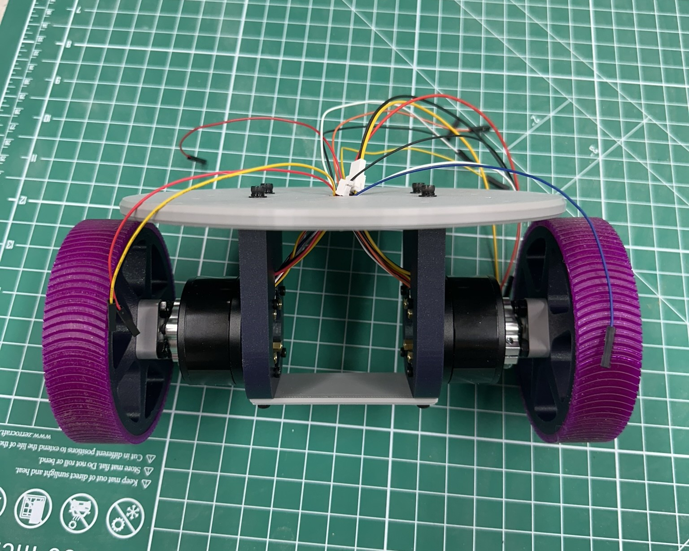
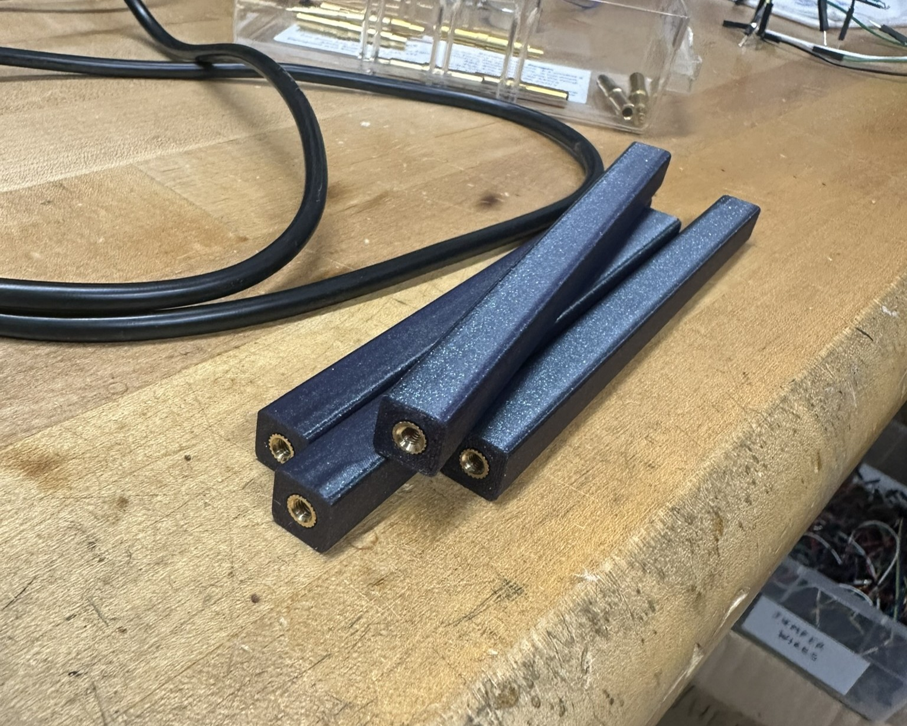

June 2, 2026
Foundation
The most important part of this foundation is the gray plate. With holes in a grid, the design is meant to be as modular as possible, allowing parts like the blue beams shown to be placed anywhere. Heatset brass threaded inserts were used for a secure fit on all load-bearing connective parts.


Building process of chassis
Also pictured here are the 3D printed wheels and treads made. The wheel is PLA, but the custom treads are TPU. After little testing, these were determined to be too slippy and real rubber treads were then ordered.